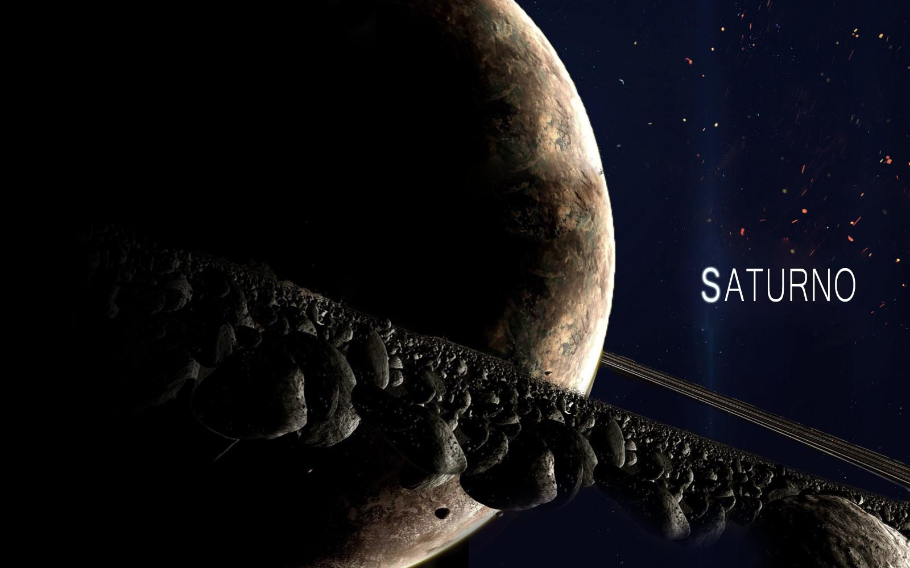

Saturno
Saturno é o sexto planeta a partir do Sol e o segundo maior do Sistema Solar atrás de Júpiter. Pertencente ao grupo dos gigantes gasosos, possui cerca de 95 massas terrestres e orbita a uma distância média de 9,5 unidades astronômicas. Possui um pequeno núcleo rochoso, circundado por uma espessa camada de hidrogênio metálico e hélio. A sua atmosfera, também composta principalmente de hidrogênio, apresenta faixas com fortes ventos, cuja energia provém tanto do calor recebido do Sol quanto da energia irradiada de seu centro. Entretanto, estas bandas possuem aspecto pouco proeminente, com coloração que varia do marrom ao amarelado, devido à espessa névoa que envolve o planeta, além das camadas de nuvens. Sazonalmente surgem grandes sistemas de tempestades, além de vórtices permanentes existentes nos polos.

Sua magnetosfera gera, dentre outros fenômenos, auroras em seus polos. Uma das origens de seu campo magnético é a rápida rotação do planeta (menos de onze horas), que faz ainda que Saturno seja o planeta mais achatado do Sistema Solar. Modelos sugerem que o planeta teria se formado mais perto do Sol mas, devido à interação gravitacional com outros corpos, migrou para longe. Uma das características mais notáveis de Saturno é seu complexo e proeminente sistema de anéis, formados por gelo de água. Além dos anéis, mais de oitenta satélites naturais ao seu redor, dos quais destaca-se Titã, envolto em uma espessa atmosfera de metano. Visto da Terra, Saturno aparenta ser uma estrela brilhante no céu, facilmente visível. Somente após a invenção do telescópio, entretanto, descobriu-se seus anéis e satélites. Embora a qualidade dos instrumentos de observação tenha evoluído, o envio de sondas espaciais revelou detalhes sem precedentes. As sondas Pioneer 11, Voyager 1 e Voyager 2 passaram próximas a Saturno, mas sua complexidade motivou o envio de um orbitador, a Cassini, que levou consigo uma sonda, Huygens, que acabou por pousar na superfície de Titã.